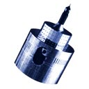
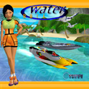
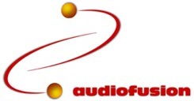
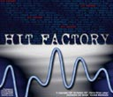

|
Welcome to the archives place:
The following list contains most programs I have developed in the past but which are not distributed anymore for various reasons.
| X-Saver 1.2.1 | 2002-08-28 | X-Saver is a screen saver module for the Screen Saver panel of the System Preferences application.
It displays a high-speed vortex tunnel: this thing is really "psychedelic"!
X-Saver is based on the OpenGL PixelShox 3D engine.
WARNING: on some configurations, this screen saver may crash the System Preferences application. I'm investigating the problem.
System requirements: MacOS X 10.1 |
| X-Locks 1.0 | 2002-08-19 | X-Locks is an application that allows you to keep all your passwords, serial numbers, access codes... in a secured database, inside your Documents folder.
The X-Locks Database is fully encrypted with a Master Password to ensure its privacy (up to 448 bits encryption).
The Master Password can be stored inside the MacOS Keychain so that you don't need to type it each time you launch X-Locks.
System requirements: MacOS X 10.1 |
| X-Namer 1.0 | 2002-08-19 | This utility allows you to rename a serie of files (they do not even have to be in the same folder) according to a pattern.
Use it to add an extension, change the extension, suffix a number, replace part of the name... of hundreds of files with a simple click!
You can see the new names of the files in a list to make sure the result is what you expect, before renaming the files.
System requirements: MacOS X 10.1 |
|  | X-Sat 1.0 | 2002-08-19 | X-Sat is a utility that downloads directly from the Internet the latest satellite images among a predefined set of areas (Earth, USA, Europe, Africa, Asia...).
You can configure X-Sat to download automatically a given satellite image each time you launch it.
If you often look at the satellite image of your country to guess the upcoming weather, you will love X-Sat!
X-Sat is also a valuable learning tool for children interested in world geography.
System requirements: MacOS X 10.1 |
| Hold-Up 1.7.5 | 2002-04-28 | The Hold-Up personal finance manager software was created by Pierre-Olivier Latour and Didier Larue.
Like any other personal finance manager, you can manage several accounts, enter an unlimited number of transactions, create scheduled transactions, define categories, payment types...
BUT here's why this product is way better than other products available now:
Contrary to others personal finance managers, Hold-Up has a nice and very well designed user interface, and most important, it has exclusive features like:
• powerful filters (which display only transactions that match some criteria),
• multiple transactions edition in one dialog,
• automatic transaction name completion,
• dynamic notes (they popup under the mouse),
• a lighting fast search field,
• several skins (Platinum, Aqua...),
• currency conversion...
System requirements: MacOS 8.6, MacOS X 10.1 |
|  | WaterRace 1.0.3 | 2001-01-01 | WaterRace is an offshore racing game with unique characters, levels and ships, each having their own technical characteristics. Mastering the different ships and levels is an extraordinary challenge.
The beauty and the diversity of the circuits located in different parts of the world, and the incredible soundtrack create a thrilling atmosphere.
WaterRace was developed by an independent team of 8 european developers called "French Touch". They worked as free-lancers during 2 years on this game and during their free time, to bring this original game to the Mac.
System requirements: MacOS 8.5, 3D card with 6Mb VRAM |
|  | AudioFusion 1.1 | 1999-12-06 | AudioFusion was a new version of Hit Factory with a redesigned interface (the new name was a consequence of an intellectual property conflict).
Here's the former description of the product:
"This software reproduces all the devices of the techno world (sampler, synthesizer, beat box) with advantages of the computer. With the help of its five units (sampler, synthetizer, beat box and editor), AudioFusion TWS will transform your Mac into a real studio. Moreover, thanks to its help mixing system (quantize), you will be able to easily create your own music or remix other favorites.
AudioFusion TWS is also a professional music software. Thanks to its powerful MIDI compatibility and its AIFF export, this program is essential to the home studio of the musician or the multimedia creator."
AudioFusion was distributed by Syclone Multimedia, Canada. |
|  | Hit Factory 3.1.4 | 1997-06-19 | Hit Factory was my first "big" program and also my first shareware. I developed it while I was learning programming on the Mac.
Hit Factory was the first easy-to-use music creation tool on the Mac, even before the fashion for Music Maker-like programs started on the PC started.
Here's a clip from its description:
"[Hit Factory] brings you a stereo sampler (with 8 to 30 tracks) with Direct To Disk possibilities, a stereo synthesizer (up to 10 channels of polyphony) and a stereo rhythms box (up to 10 channels of polyphony). Furthermore you can record everything you do, then reproduce (automation) or modify them. With this software, you will be able to create easily your own musics or remix the ones you like. Hit Factory is the perfect software for all thoses who like to create dance music, techno, trance, rap... and "LIVE" remixes. Thanks to its Direct To Disk capabilities, it can also be used as a multitracks audio numeric recorder for "rock" musicians."
Hit Factory had a pretty good success as a shareware and I eventually set up a partnership with Syclone Multimedia in Montreal, Canada to take care of the distribution. |
|